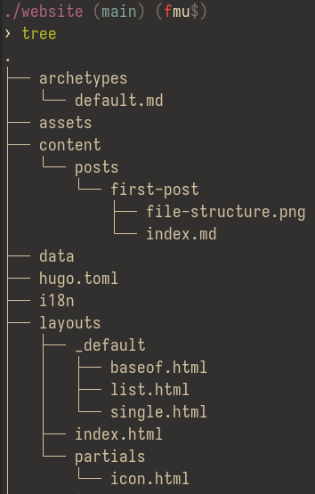

This post works through my 1-day process of installing Hugo, configuring it with a custom theme, and making this blog post.
What is Hugo?
Hugo is known as a static site generator. It is used to make a wide assortment of different websites, but it seems very popular to use in this exact case I am today- making blogs.
Hugo was written in Go and unlike usual websites that dynamically generate the page whenever someone visits it, Hugo generates it ahead of time. The HTML is fully generated ahead of time. This makes it very nice to use with github pages.
The ability to write posts in markdown makes the speed, and ease of use for blogging miles easier and takes much less time. Another option that people use often for github pages is Jekyll. I looked at it once and decided I didn’t want to install Ruby :P.
The Process
I installed Hugo on my WSL2 Debian instance and immediately went to the documentation and read the Quick-Start page. I found the quickstart a bit weird as I wanted to make my own theme so telling the person to clone Ananke off-rip was kind of weird. I ended up just asking ChatGPT to give me a quick-start and it told me to generate a theme using hugo new theme (name) in my terminal which was not required at all.
If you are deciding on making your own blog using Hugo, and want to create your own theme, you only need the base file structure. There is no need for a separate theme module. The general file structure isn’t that difficult to understand. This is my structure:

I don’t know what archetypes, assets, or data do. Who needs those though? I didn’t.
Couple things to note about this file structure:
content/posts/is where all the posts go. Each post can be a separate folder where all assets/images reside, as well as the mainindex.mdfile (it needs to be named index.md, trust me bro)._defaults/baseof.htmlis like the main HTML file, it contains all the links to stylesheets and the general structure of the website.list.htmlaswell assingle.htmlare separate elements that get placed into thebaseof.htmlfile on a loop. Thelist.htmlis the list of posts under my full post list page.single.htmlis the HTML that makes this current page.- The partials are almost components as well, similar to the
list.htmlandsingle.htmlbut it’s even smaller in scale. In my case,icon.htmlis used to only generate the icons on the status element at the bottom of these pages. The github/youtube icons specifically.
Icons
Icons were a little interesting and made me learn something new about CSS/HTML. So interesting in fact that I’m dedicated a whole section to them.
|
|
You’ll most likely have to scroll a lot for this code snippet…
This HTML snippet defines the SVG paths for what to render… I had no idea this was possible. There might be a better way to do this but, this works so I’ll stick with it.
Together in junction with this icon-svg-rendering method, I specified some stuff in my hugo.toml file:
|
|
To render the icon, I’m just reading the name and converting it to the SVG element. As I was making this, I was originally going to just leave them as plain text youtube and github. I was certainly a fan of this method.
Styling
Styling Hugo is like styling any website. It’s a lot of CSS- boring amazing CSS (it wasn’t that boring, but I for sure did use Claude to make it quicker…). If you can’t tell by my websites obvious Gruvbox theme, I like gruvbox. I use Gruvbox colors everywhere- terminal, desktop environment, browsers, helix, zed, codium. Point is, if it has gruvbox themeing capabilities, I will certainly try to get gruvbox.
Having worked with CSS before for a waybar configuration I already had the palette ready to copy and paste, I just had to tell Claude to follow it. As for inspiration for the website, I was working on a system customizing KDE Plasma a bit and made my environment similar to MacOS with the top bar and a smaller icon-based task bar. My navigation bar and smaller bar on top and bottom of the page follow this. The posts were just a random “make them cards!” thought.
The more technical side of the styling was styling these pesky code snippet elements. Since Hugo is a static site generator, they can’t be dynamically altered. Hugo has many built-in themes for syntax highlighting. To generate the CSS file you can run something very similar to this:
hugo gen chromastyles --style=gruvbox > static/css/syntax.css
After that is generated, you just include it as a regular css file in baseof.html. This however, does not change the container element surrounding the snippet text itself. To change that I have to do this:
|
|
And for full snippets:
|
|
It definitely felt a bit complicated at points, but I’m very happy with the current state of my blog styling. There might be some things that need to be fixed over time but I would rather keep this very simple and not something large to maintain. I probably won’t be making an insane amount of blog posts anyway.
Conclusion
Hugo is great for personal blogs or websites hosted on github pages. Generating content statically makes load times quick and writing in markdown is saving a ton of time. I fully recommend trying this yourself if you are interesting one evening. And if you don’t want to spend 5 hours on it (excluding writing this) like me, use an already built theme.
This is my first day, so I’ve still got much to learn, and this blog can serve as a look-back at my progress.
I love Maya.
-komidan